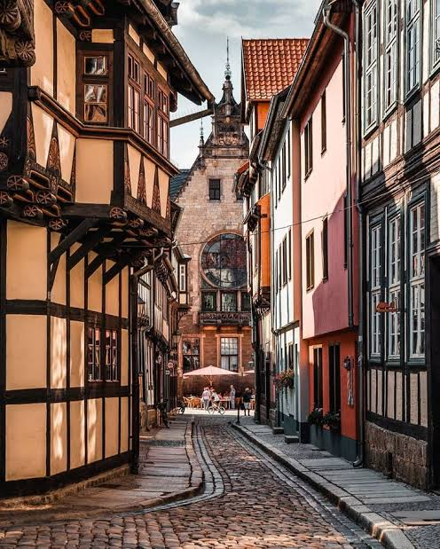
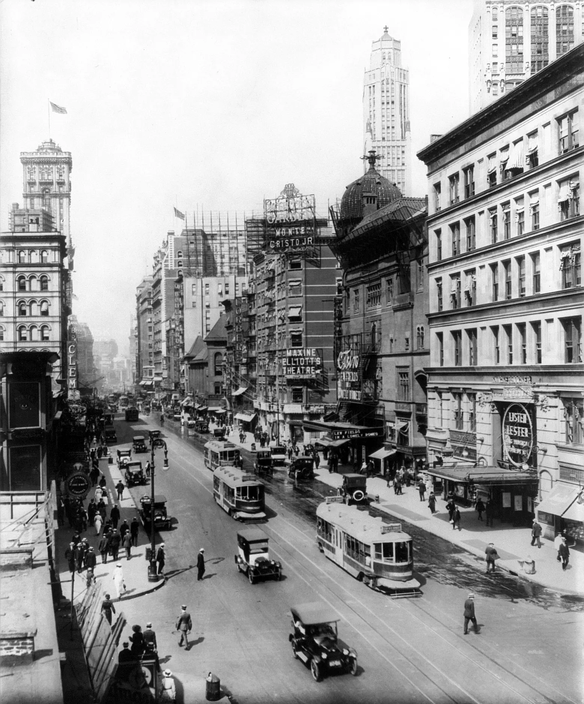
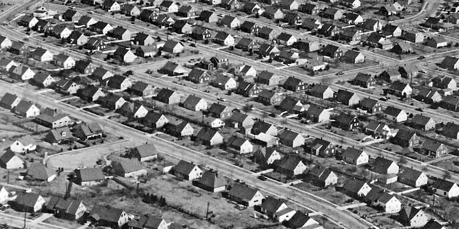
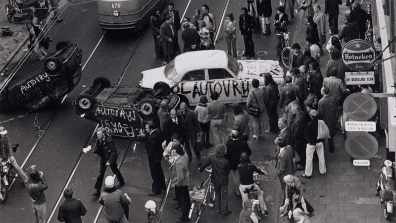
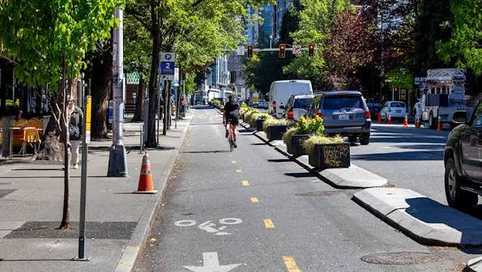

Kota Sebelum
Mobil
Sebelum adanya mobil, kota-kota di dunia dirancang untuk kehidupan manusia. Jalanan dibuat sempit khusus untuk pejalan kaki dan fasilitas publik dibangun sedekat mungkin dengan perumahan. Jalan raya yang lebih lebar diperuntukkan bagi transportasi publik seperti trem dan kereta api yang sudah ada sejak lama. Densitas tinggi dan kedekatan antar fasilitas adalah norma, bukan pengecualian.

Munculnya
Mobil
Dengan munculnya mobil, mobilitas penduduk dalam kota meningkat pesat sehingga perencanaan kota mulai melebarkan jalanan yang sempit dan menyebarkan fasilitas publik lebih jauh dari pusat permukiman. Ini merupakan awal dari perubahan paradigma desain kota dari orientasi manusia ke orientasi kendaraan bermotor.

Puncak Sentrisme
Mobil
Akibat harga mobil turun drastis, kota mulai mekar keluar dengan pesat. Pemerintah-pemerintah di seluruh dunia fokus pada pembuatan kawasan perumahan keluarga tunggal (Single-family housing) dan menghubungkannya dengan kota utama melalui jalanan besar. Penyebaran densitas kota ini dikenal sebagai Urban Sprawl.

Munculnya Oposisi
& Krisis BBM
Karena maraknya pembongkaran perumahan dalam kota demi jalan tol, tingginya polusi udara, serta tingginya harga BBM akibat krisis minyak — beberapa kota di Eropa mulai menghentikan ekspansi jalanannya. Mereka beralih membangun tata kota yang human-centric dengan mengedepankan transportasi publik dan ruang pejalan kaki.

Anti-Car
Urbanism
Melihat contoh kota-kota di Eropa yang menjadi lebih produktif dengan kebijakan anti-mobil, muncul berbagai pergerakan dalam ruang perencanaan kota yang mengajukan tata kota lebih memprioritaskan manusia daripada mobil. Konsep 15-Minute City, Transit-Oriented Development, dan Road Diet kini diadopsi oleh kota-kota besar di dunia.
